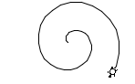
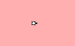

public class Terrarium
extends javax.swing.JPanel
A Turtle lives (and draws) inside a Terrarium.

A terrarium can be resized using the setSize(int, int) method and repositioned on the screen using the
setPosition(int, int). The terrarium can also have a custom background color (set via the
JComponent.setBackground(Color) method — it defaults to white.

Initially, there is only a single terrarium, into which all new turtles are added. However, it is possible to
instantiate additional terraria, and to direct Turtles to them using the Turtle.setTerrarium(Terrarium)
method. From a technical standpoint, the initial terrarium is a quasi-singleton, and will continue to be treated as
a singleton by any new turtles as they are instantiated. The singleton terrarium instance can be accessed statically
via the getInstance() method. When additional terraria have been instantiated, they may also be accessed
statically via their index (in instantiation order) using the getInstance(int) method.
| Modifier and Type | Class and Description |
|---|---|
static class |
Terrarium.UnderTheSurface
The parts of the terrarium that are "under the surface" are not meant to be used by students.
|
| Modifier and Type | Field and Description |
|---|---|
static java.awt.Color |
DEFAULT_BACKGROUND
Color.WHITE |
static int |
DEFAULT_HEIGHT
400 pixels
|
static int |
DEFAULT_WIDTH
600 pixels
|
TOOL_TIP_TEXT_KEY, UNDEFINED_CONDITION, WHEN_ANCESTOR_OF_FOCUSED_COMPONENT, WHEN_FOCUSED, WHEN_IN_FOCUSED_WINDOW| Constructor and Description |
|---|
Terrarium()
Construct a new terrarium of default dimensions, centered on the screen in its own window
|
| Modifier and Type | Method and Description |
|---|---|
void |
add(Track track,
Turtle.UnderTheShell key)
Adds a new turtle track to the terrarium
|
void |
add(Turtle turtle,
Turtle.UnderTheShell key)
Adds a new turtle to the terrarium
|
void |
clear()
Clear all turtle tracks from the terrarium
|
static Terrarium |
getInstance()
Get the default terrarium instance (instantiating it, if necessary)
|
static Terrarium |
getInstance(int index)
Get a particular Terrarium instance
|
void |
paintComponent(java.awt.Graphics context)
Repaint the contents of the terrarium (tracks and turtles) as-needed
|
void |
remove(Turtle turtle,
Turtle.UnderTheShell key)
Remove a turtle from the terrarium
|
void |
setPosition(int x,
int y)
Adjust the location of the terrarium window.
|
void |
setSize(int width,
int height)
Adjust the dimensions of the terrarium view
|
getAccessibleContext, getUI, getUIClassID, setUI, updateUIaddAncestorListener, addNotify, addVetoableChangeListener, computeVisibleRect, contains, createToolTip, disable, enable, firePropertyChange, firePropertyChange, firePropertyChange, getActionForKeyStroke, getActionMap, getAlignmentX, getAlignmentY, getAncestorListeners, getAutoscrolls, getBaseline, getBaselineResizeBehavior, getBorder, getBounds, getClientProperty, getComponentPopupMenu, getConditionForKeyStroke, getDebugGraphicsOptions, getDefaultLocale, getFontMetrics, getGraphics, getHeight, getInheritsPopupMenu, getInputMap, getInputMap, getInputVerifier, getInsets, getInsets, getListeners, getLocation, getMaximumSize, getMinimumSize, getNextFocusableComponent, getPopupLocation, getPreferredSize, getRegisteredKeyStrokes, getRootPane, getSize, getToolTipLocation, getToolTipText, getToolTipText, getTopLevelAncestor, getTransferHandler, getVerifyInputWhenFocusTarget, getVetoableChangeListeners, getVisibleRect, getWidth, getX, getY, grabFocus, hide, isDoubleBuffered, isLightweightComponent, isManagingFocus, isOpaque, isOptimizedDrawingEnabled, isPaintingForPrint, isPaintingTile, isRequestFocusEnabled, isValidateRoot, paint, paintImmediately, paintImmediately, print, printAll, putClientProperty, registerKeyboardAction, registerKeyboardAction, removeAncestorListener, removeNotify, removeVetoableChangeListener, repaint, repaint, requestDefaultFocus, requestFocus, requestFocus, requestFocusInWindow, resetKeyboardActions, reshape, revalidate, scrollRectToVisible, setActionMap, setAlignmentX, setAlignmentY, setAutoscrolls, setBackground, setBorder, setComponentPopupMenu, setDebugGraphicsOptions, setDefaultLocale, setDoubleBuffered, setEnabled, setFocusTraversalKeys, setFont, setForeground, setInheritsPopupMenu, setInputMap, setInputVerifier, setMaximumSize, setMinimumSize, setNextFocusableComponent, setOpaque, setPreferredSize, setRequestFocusEnabled, setToolTipText, setTransferHandler, setVerifyInputWhenFocusTarget, setVisible, unregisterKeyboardAction, updateadd, add, add, add, add, addContainerListener, addPropertyChangeListener, addPropertyChangeListener, applyComponentOrientation, areFocusTraversalKeysSet, countComponents, deliverEvent, doLayout, findComponentAt, findComponentAt, getComponent, getComponentAt, getComponentAt, getComponentCount, getComponents, getComponentZOrder, getContainerListeners, getFocusTraversalKeys, getFocusTraversalPolicy, getLayout, getMousePosition, insets, invalidate, isAncestorOf, isFocusCycleRoot, isFocusCycleRoot, isFocusTraversalPolicyProvider, isFocusTraversalPolicySet, layout, list, list, locate, minimumSize, paintComponents, preferredSize, printComponents, remove, remove, removeAll, removeContainerListener, setComponentZOrder, setFocusCycleRoot, setFocusTraversalPolicy, setFocusTraversalPolicyProvider, setLayout, transferFocusDownCycle, validateaction, add, addComponentListener, addFocusListener, addHierarchyBoundsListener, addHierarchyListener, addInputMethodListener, addKeyListener, addMouseListener, addMouseMotionListener, addMouseWheelListener, bounds, checkImage, checkImage, contains, createImage, createImage, createVolatileImage, createVolatileImage, dispatchEvent, enable, enableInputMethods, firePropertyChange, firePropertyChange, firePropertyChange, firePropertyChange, firePropertyChange, getBackground, getBounds, getColorModel, getComponentListeners, getComponentOrientation, getCursor, getDropTarget, getFocusCycleRootAncestor, getFocusListeners, getFocusTraversalKeysEnabled, getFont, getForeground, getGraphicsConfiguration, getHierarchyBoundsListeners, getHierarchyListeners, getIgnoreRepaint, getInputContext, getInputMethodListeners, getInputMethodRequests, getKeyListeners, getLocale, getLocation, getLocationOnScreen, getMouseListeners, getMouseMotionListeners, getMousePosition, getMouseWheelListeners, getName, getParent, getPeer, getPropertyChangeListeners, getPropertyChangeListeners, getSize, getToolkit, getTreeLock, gotFocus, handleEvent, hasFocus, imageUpdate, inside, isBackgroundSet, isCursorSet, isDisplayable, isEnabled, isFocusable, isFocusOwner, isFocusTraversable, isFontSet, isForegroundSet, isLightweight, isMaximumSizeSet, isMinimumSizeSet, isPreferredSizeSet, isShowing, isValid, isVisible, keyDown, keyUp, list, list, list, location, lostFocus, mouseDown, mouseDrag, mouseEnter, mouseExit, mouseMove, mouseUp, move, nextFocus, paintAll, postEvent, prepareImage, prepareImage, remove, removeComponentListener, removeFocusListener, removeHierarchyBoundsListener, removeHierarchyListener, removeInputMethodListener, removeKeyListener, removeMouseListener, removeMouseMotionListener, removeMouseWheelListener, removePropertyChangeListener, removePropertyChangeListener, repaint, repaint, repaint, resize, resize, setBounds, setBounds, setComponentOrientation, setCursor, setDropTarget, setFocusable, setFocusTraversalKeysEnabled, setIgnoreRepaint, setLocale, setLocation, setLocation, setName, setSize, show, show, size, toString, transferFocus, transferFocusBackward, transferFocusUpCyclepublic static final int DEFAULT_WIDTH
public static final int DEFAULT_HEIGHT
public static final java.awt.Color DEFAULT_BACKGROUND
Color.WHITEpublic Terrarium()
public static Terrarium getInstance()
public static Terrarium getInstance(int index)
index - [0..n) if there are n terraria, sequenced by instantiation
orderpublic void add(Track track, Turtle.UnderTheShell key)
Adds a new turtle track to the terrarium
May only be called by Turtle and its subclasses, enforced via Turtle.UnderTheShell.
track - to be addedkey - to authenticate "Turtleness"public void clear()
public void add(Turtle turtle, Turtle.UnderTheShell key)
Adds a new turtle to the terrarium
May only be called by Turtle and its subclasses, enforced via Turtle.UnderTheShell.
turtle - to be addedkey - to authenticate "Turtleness"public void remove(Turtle turtle, Turtle.UnderTheShell key)
Remove a turtle from the terrarium
May only be called by Turtle and its subclasses, enforced via Turtle.UnderTheShell.
turtle - to be removedkey - to authenticate "Turtleness"public void setSize(int width,
int height)
setSize in class java.awt.Componentwidth - in pixelsheight - in pixelsComponent.getSize(),
Component.setBounds(int, int, int, int),
Component.invalidate()public void setPosition(int x,
int y)
x - coordinatey - coordinatepublic void paintComponent(java.awt.Graphics context)
Repaint the contents of the terrarium (tracks and turtles) as-needed
This method is called automatically by the enclosing JFrame to repaint the terrarium as-needed. It is
not meant to be called at will. If the terrarium needs to be updated, a Component.repaint() request will schedule
the update.
paintComponent in class javax.swing.JComponentcontext - for drawing commandsJComponent.paint(java.awt.Graphics),
ComponentUI